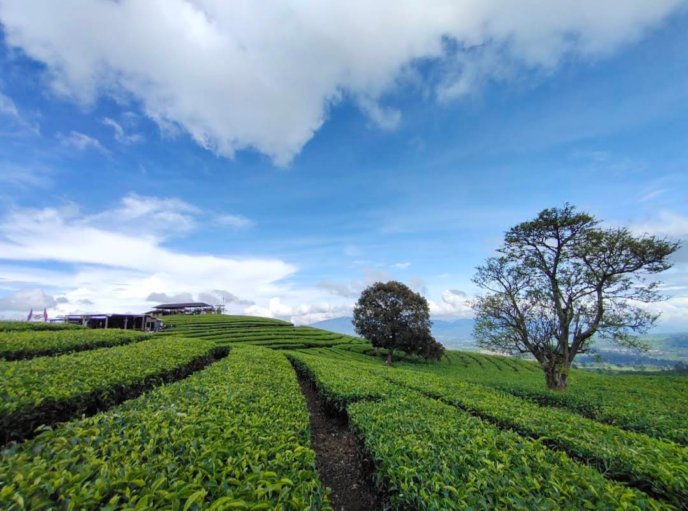
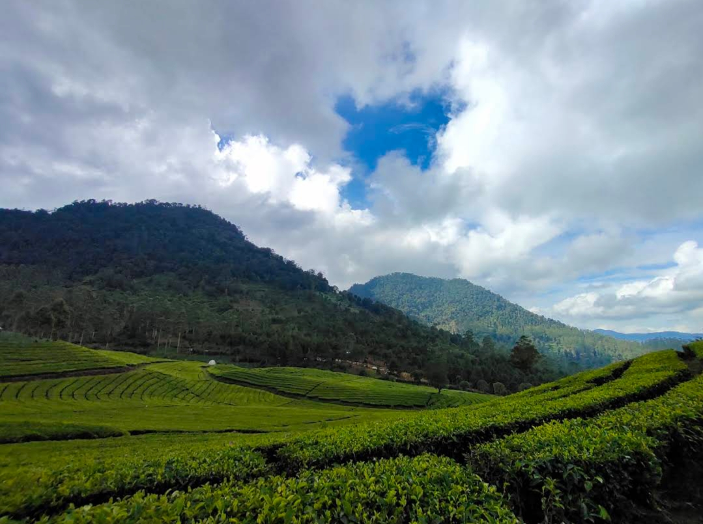
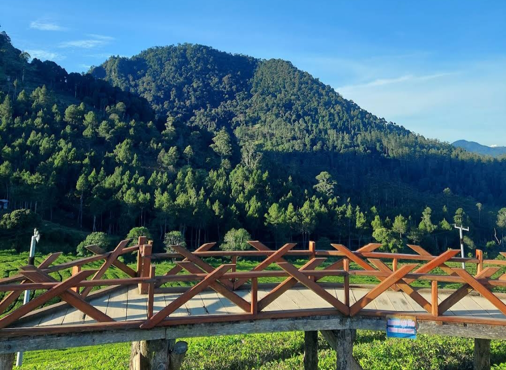

Tentang Wayang Windu Panenjoan
Wayang Windu Panenjoan adalah destinasi wisata alam di Pangalengan, menampilkan kebun teh hijau yang luas dan pemandangan pegunungan yang indah, serta udara sekitar yang sejuk. Para pengunjung dapat menikmati suasana alam, sunrise & sunset, spot foto, dll.
Lebih lengkap
Kawasan Wayang Windu Panenjoan berada di ketinggian sekitar 1.600-1.800 mdpl, membuat udara sekitar sejuk dan sering berkabut.
Sejarah asal nama "Wayang Windu" berasal dari nama dua Gunung Kembar yang menjadi pemandangan kawasan ini, yakni Gunung Wayang dan Gunung Windu.
Fasilitas & Layanan
- Pemandangan Alam & Spot Foto
- Jalur Trekking & Hiking
- Camping & Glamping
- ATB & Outdoor Ride
- Flying Fox (Wahana Adrenalin)
- Fun Game/Family Game
- Gazebo & Area Santai
- Fasilitas Pendukung (Toilet, Mushola, Warung, Area parkir)
Pemandangan Alam
Vlog Wayang Windu Panenjoan
Views Wayang Windu Panenjoan



Audio
Lokasi & Jam operasional
Jl. Raya Pangalengan No.42, Pangalengan, Kec. Pangalengan, Kabupaten Bandung, Jawa Barat 40378
Jam Operasional:
Harga Tiket & Wahana
| Tiket & Wahana | Harga | |
|---|---|---|
| Anak-anak | Dewasa | |
| Tiket Masuk | Rp15.000 – Rp20.000/orang | |
| Parkir Motor | Rp5.000 | |
| Parkir Mobil | Rp10.000 | |
| Parkir Elf/Hiace | Rp20.000 | |
| Parkir Bus | Rp30.000 – Rp50.000 | |
| Flying Fox | Rp30.000 | Rp50.000 |
| ATV | Rp70.000 – Rp300.000 | |
| Fun Game | Rp35.000/ orang | |
| Sewa Gazebo | Kecil: Rp30.000/jam | Besar: Rp50.000/jam |
| Camping | Rp550.000/hari | |
| Harga dapat berubah seiring berjalannya waktu. | ||